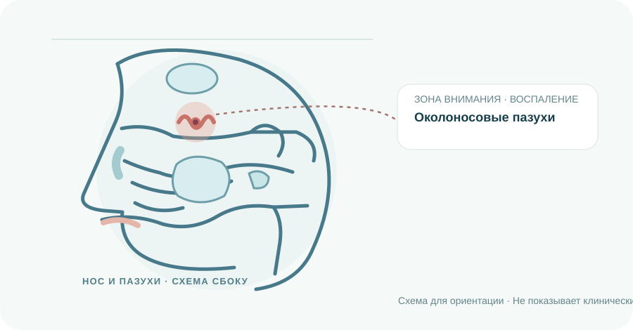
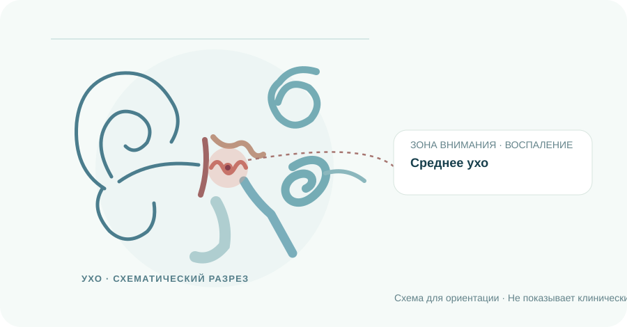
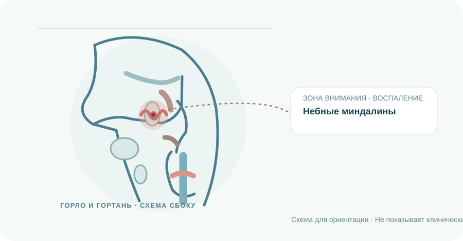

Нос и пазухи
Носовая полость, пазухи и носоглотка связаны с дыханием, обонянием и оттоком слизи.
Исследовать носИНТЕРАКТИВНАЯ КАРТА ЛОР-ОРГАНОВ
Пройдите путь от общей схемы уха, горла и носа к отдельной области и материалу по заболеванию. Изображения схематичны и не предназначены для самодиагностики.
Начать исследованиеАНАТОМИЯ · ТРИ СВЯЗАННЫЕ ОБЛАСТИ

Нос и пазухи
Ухо и слух
Горло и голосПрокрутите страницу, чтобы рассмотреть каждую область
Носовая полость, пазухи и носоглотка связаны с дыханием, обонянием и оттоком слизи.
Исследовать носНаружное, среднее и внутреннее ухо участвуют в проведении звука и работе равновесия.
Исследовать ухоГлотка, миндалины и гортань участвуют в глотании, дыхании и образовании голоса.
Исследовать горлоИССЛЕДОВАТЬ ОРГАН
Выберите орган, затем тему. На схеме появится соответствующая область; рядом откроется короткое пояснение и ссылка на полный материал.
Околоносовые пазухи
Пазухи и полость носа могут воспаляться одновременно.
Читать материал полностьюЦветовое выделение показывает область внимания или условный механизм. По схеме нельзя определить наличие заболевания.
ЗАПИСЬ И СВЯЗЬ
Прием в МЕДСИ и онлайн-консультация. Способы связи станут активны после получения контактов врача.